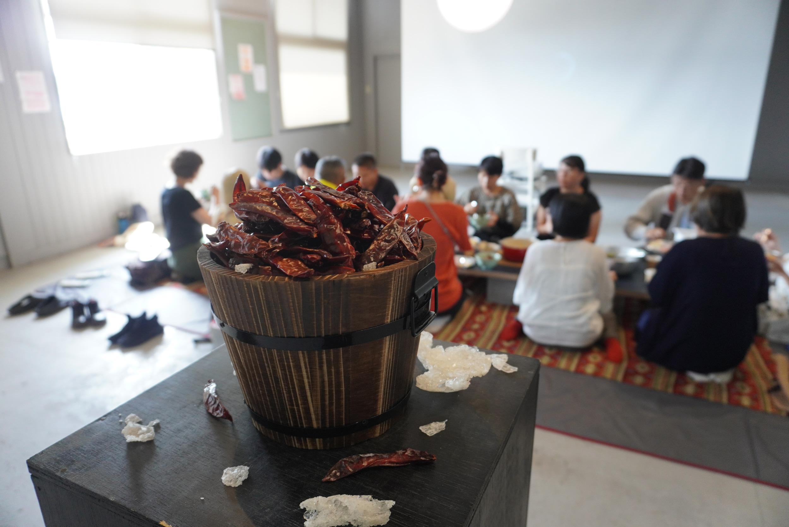

Bringing Chilies Home
唐辛子はメキシコから来て、世界を巡り、また帰る。
身体もまた、そのようにして混ざっていく。
クレオール化とは、終わりのない往復運動だ。
帰郷は、はじまりの場所へ戻ることではない。
The chili came from Mexico, traveled the world, and returns.
The body, too, mixes in this way.
Creolization is an endless back-and-forth.
Homecoming is not a return to the place of origin.
唐辛子のメキシコへの帰還を通じた、クレオール化の身体的継続。
The bodily continuation of creolization through the return of chilies to Mexico.